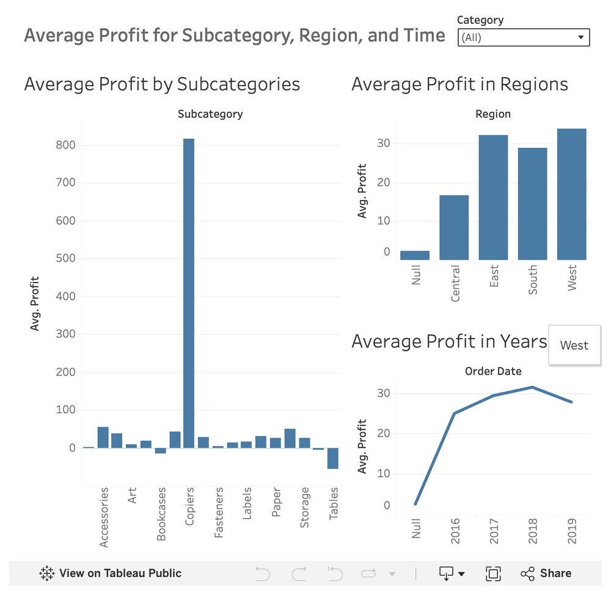

BNAN 277 · Group project
Team of five. I wrote the report and did a lot of the Excel work.
Amazon Order Profitability Analysis
Context
My team studied 9,890 Amazon orders from 2016 to 2019 to find out what separates profitable orders from unprofitable ones. We wanted advice that Amazon's leaders could use on pricing, promotions and regions.
What it shows
I can take a big data set, find the pattern and explain it in plain writing. With other factors held constant, each extra $1 of revenue added about $0.18 of profit. Each extra unit cut profit by about $3.01, and each extra 1% of discount cut it by about $2.39.
My approach
We looked at the data in Tableau first to see where profit varied, then ran a multiple regression to check which factors held up. I wrote up the results and our recommendation: review the discount strategy and watch quantity-based promotions.
Read the report (PDF)